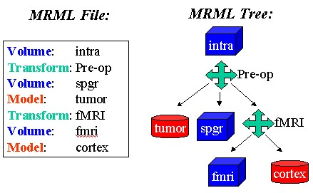

Transforms along each branch are concatenated to form a composite
transform applied to the leaf node.
The figure below displays
an example MRML file and the tree-like graph it represents. The order of nodes
in the file defines the tree structure; each transform is a parent
node, and all the nodes following it (until the next transform)
are its children. In the figure, the transform for the last volume in
the file is the concatenation of all the transforms in the file. More
complex trees, such as where multiple siblings have children, can be
constructed.

In the figure above, pre-operative volumes named spgr and fmri were
registered, and the fMRI transform was computed to align the fmri
volume to the spgr. Then, the Pre-op transform was computed to
align this fused, pre-operative data to the intra-operative volume
called intra. Thus, the transform applied to the fmri volume is
the concatenation of both transform nodes in the MRML file.